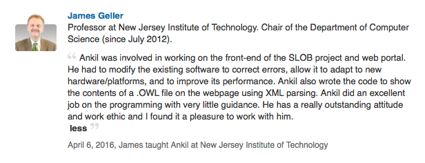
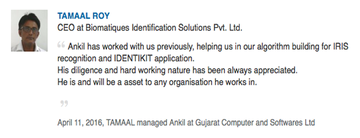
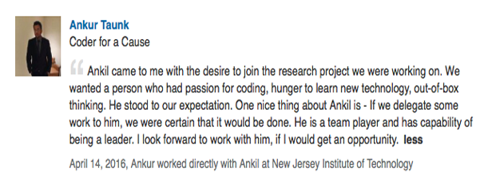

<section id="about"><div class="container"><div class="row"><div class="col-lg-12 text-center"><h2 class="text-align">About Me</h2></div></div><div class="row edu4"><div class="col-lg-6"><p align="justify">I'm pursuing a Master's degree in Computer Science from New Jersey Institute of Technology, New Jersey and having just finished my Summer Internship at Forbes as a Software Engineering Intern I am currently working under Dr. James Geller (Department of Computer Science, NJIT) as a Research Team Member. I have also worked as a Software Engineer for about a year before moving here to the United States. Although, I am a little inclined towards Web Development I enjoy playing with Java. I am a dedicated, hard working individual and have a passion to learn new technologies. My strengths lie in my multitasking abilities, communication skills, and flexibility in working in a team. I am a huge admirer of sports and I love playing video games in my spare time.</p></div><div class="col-lg-6 edu8" style="height: 352px; overflow-y: scroll;"></div></div><div class="row"><div class="col-lg-8 col-lg-offset-2 text-center"><a href="img/Resume.pdf" target="_blank" class="btn btn-sm btn-outline edu5"><h4><i class="glyphicon glyphicon-file"></i>Click to see my Resume</h4></a></div></div></div></div></section>